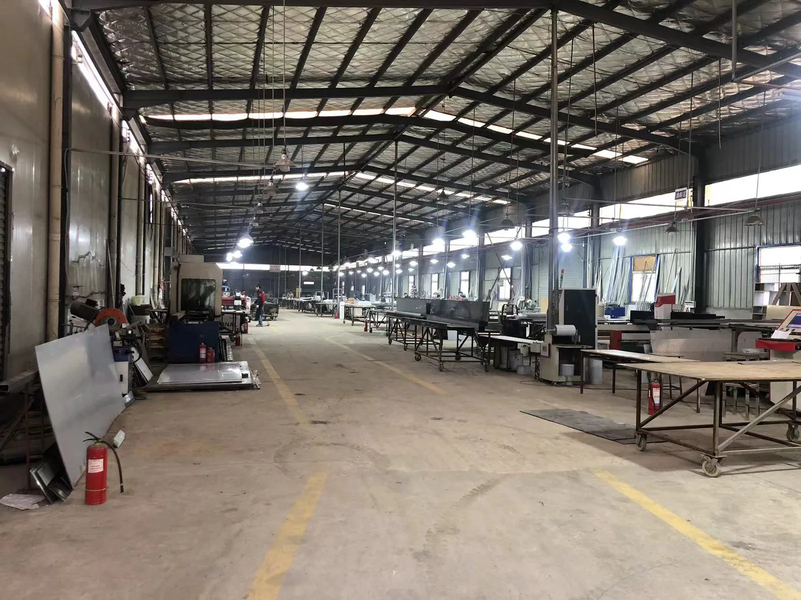
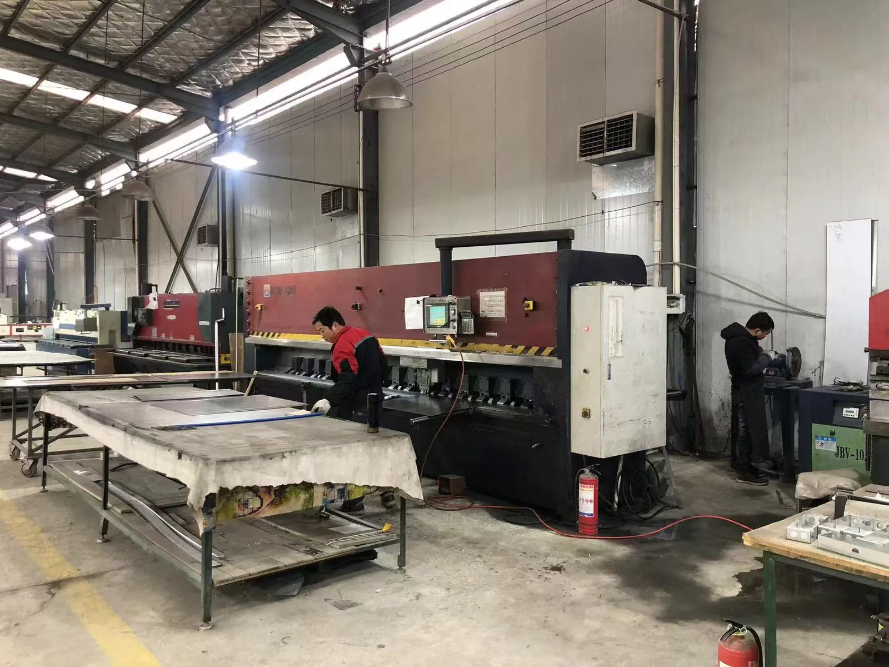
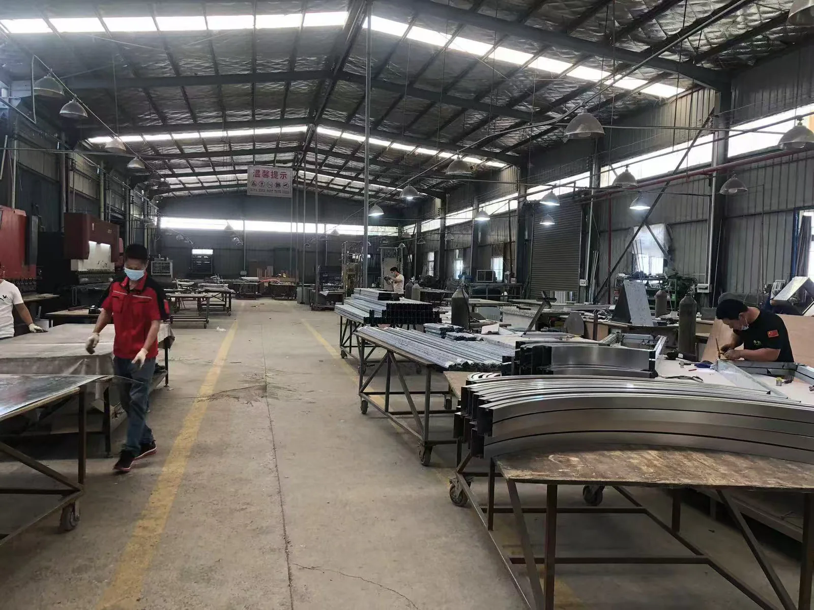
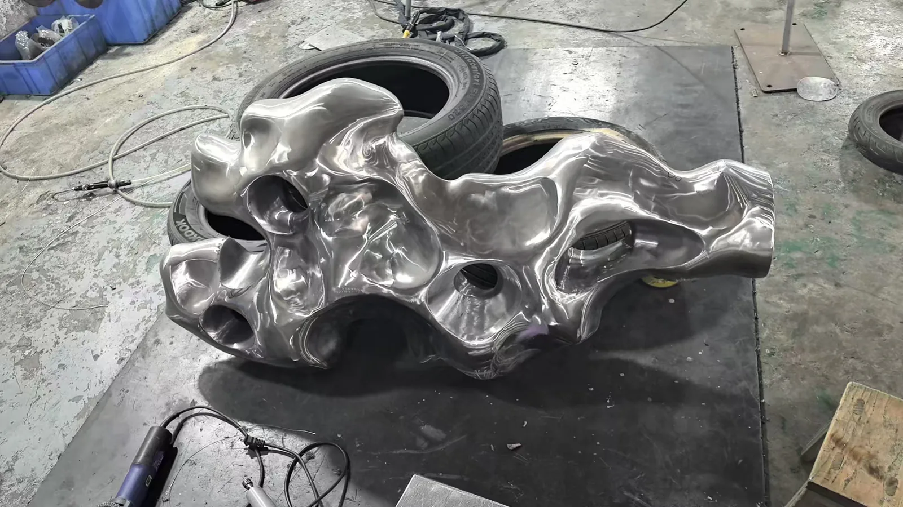
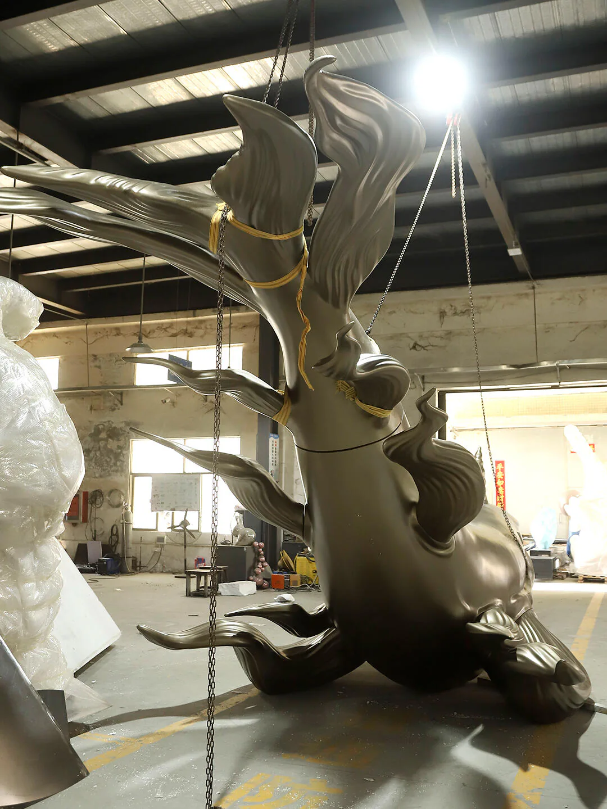
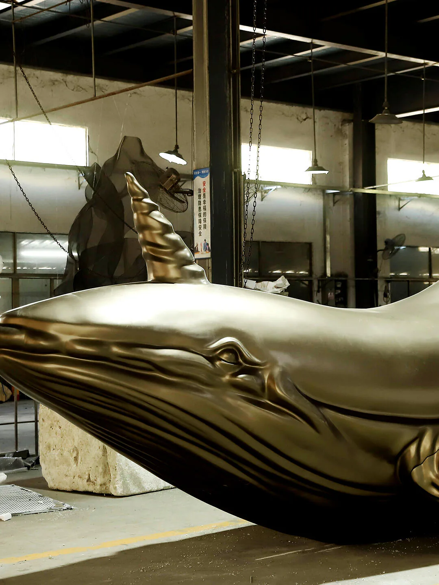
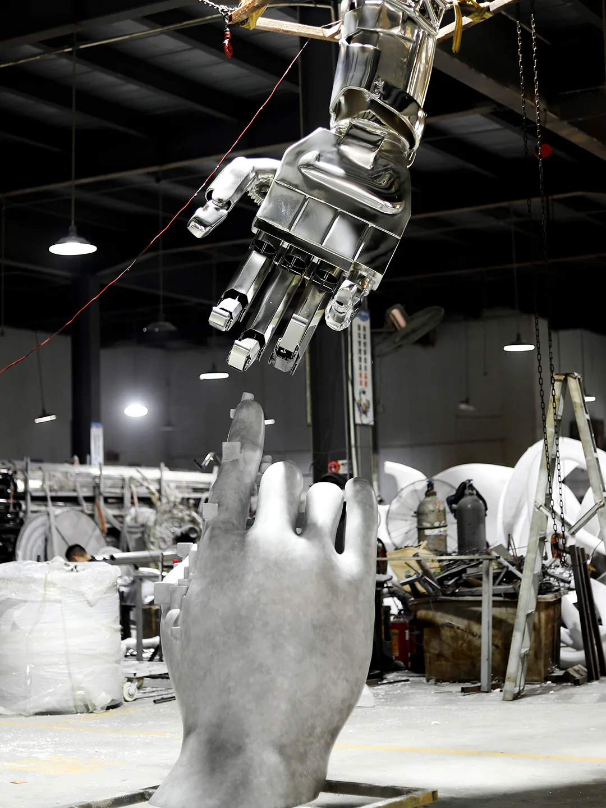
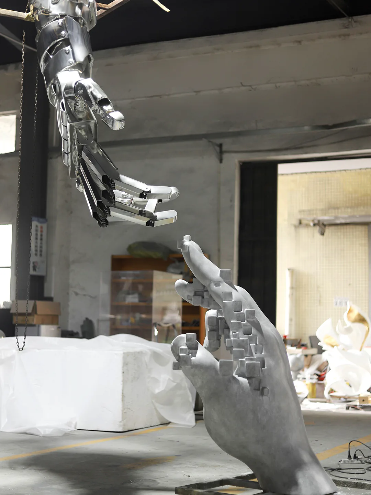
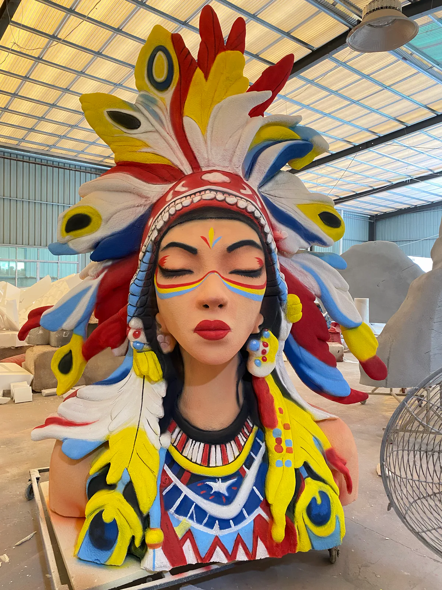
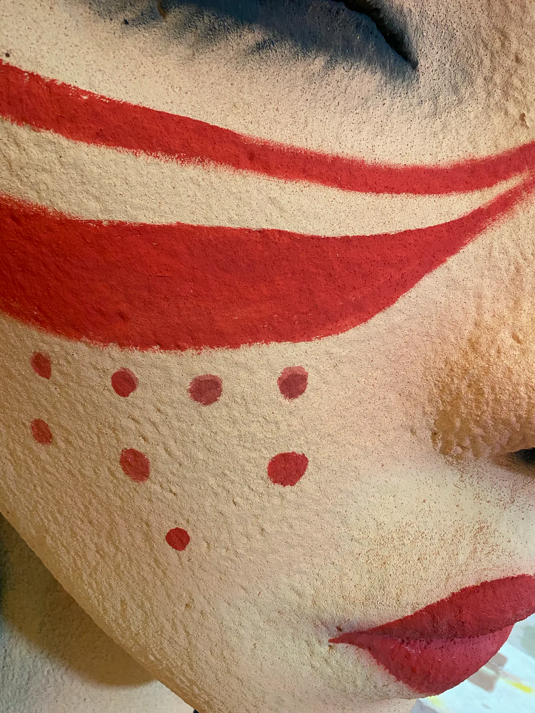

Inside the workshop.
The overall view and sheet-metal workstation photograph show the workshop layout, material handling and work surfaces.


WEIERYANG is a sculpture studio and manufacturer based in China. We make custom sculptures from client drawings or develop original designs. Send your site, approximate size and destination for a fabrication and delivery review.
WEIERYANG / FABRICATION RECORDS
These photographs show the WEIERYANG workshop, sheet-metal workstations, curved components and a reflective form in progress. The fabrication records below continue with sculptural assembly and painted detail.
The overall view and sheet-metal workstation photograph show the workshop layout, material handling and work surfaces.


Compare the rows of curved components with the reflective abstract form to discuss shape, openings and visible surface transitions for a new commission.


Use the overall form and a closer surface view to discuss reflected lines, changing curvature and visible surface junctions.


Read the relationship between hand-shaped components and visible assembly areas before defining a new design or installation approach.


Compare the overall portrait with its surface detailing to discuss colour areas, transitions and the relationship between paint and form.


Yes. We can review client drawings, CAD, sketches or a model direction for custom fabrication. Identify the dimensions, finish, site and destination, then agree any design development, structural work and approval stages required before production.
Yes. Describe the intended use and send the available site photographs or plans. Give an approximate size, or say that dimensions are undecided, so the first review can identify the design and site information needed for a reliable quotation.
Scale, material and finish, internal structure, segmentation, base interfaces, samples, packing, destination and installation support all affect the scope. Compare these items and the exclusions before comparing the total price.
Yes. WEIERYANG can develop an original sculpture direction with the client or project designer. Agree the design-development deliverables and approval stages separately from fabrication, shipping and on-site services.
Send drawings, site photos, scale, material direction, destination country, and schedule to begin a serious review.